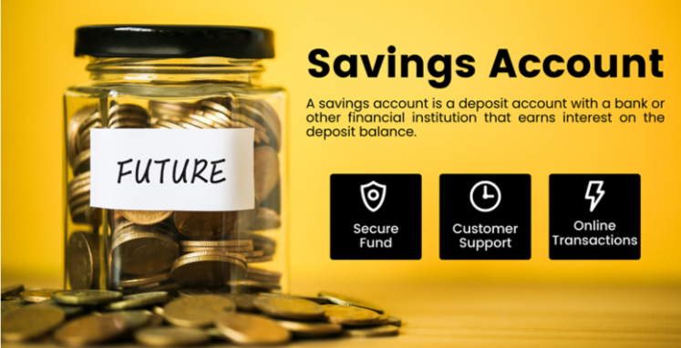

Basic Savings Bank Deposit Account
Basic Savings Bank Deposit Account

This account can be opened by any individual provided he/she has valid KYC documents. Primarily meant for poorer sections of society to encourage them to start saving without any burden of charges or fees.
Features
- Mobile banking
- Minimum balance amount Nil
- Maximum balance /amount No upper limit
- No Cheque Book facility available.
- Withdrawals only using withdrawal form at Branches or through ATMs
- Basic Rupay ATM-cum-debit card will be issued.
Eligibility
- All individuals having valid KYC documents are eligible to open BBD Account.
- Singly, jointly, or with Either or Survivor, Former or Survivor, anyone or Survivor etc. facility.
Most Important Terms & Conditions
- The Customer cannot have any other Savings Bank Account, if he/she has a Basic Savings Bank Deposit Account. If the customer already has a Savings Bank Account, the same will have to be closed within 30 days of opening a Basic Savings Bank Deposit Account.
- Maximum 4 cash withdrawals free of cost in a month, including ATM withdrawals at own and other Bank's ATMs, Cash withdrawal at Branch Channel, AEPS cash transactions.
Service Charges
- Basic RuPay ATM-cum-Debit card will be issued free of cost and no annual maintenance charge will be applied.
- Receipt/ credit of money through electronic payment channels like NEFT/RTGS will be free
- Deposit/ collection of cheques drawn by Central/State Government will be free
- No charge on activation of inoperative accounts
- No account closure charges.